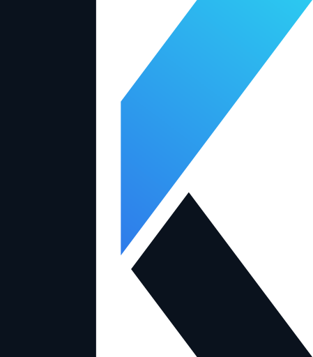
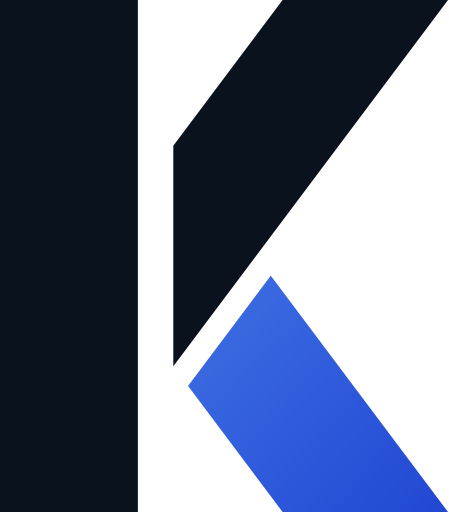
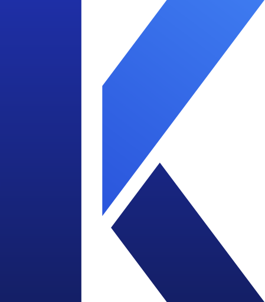
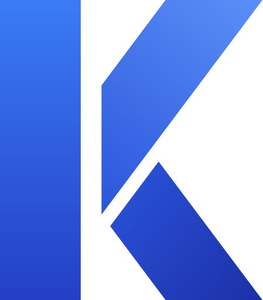
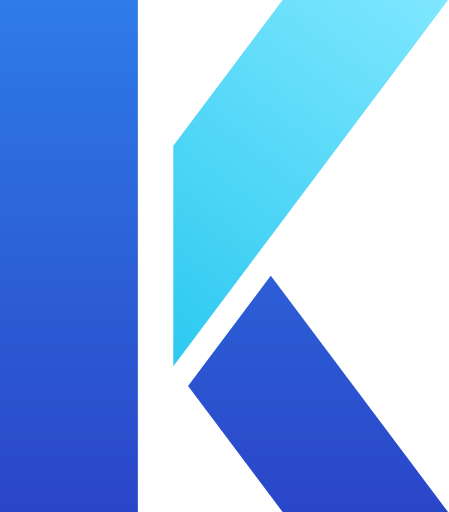
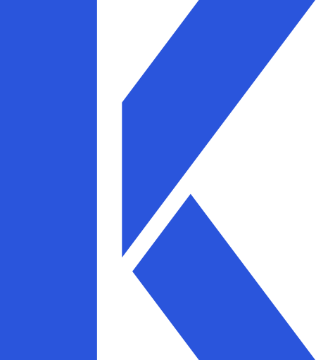
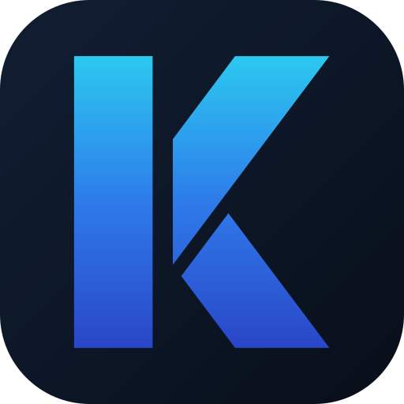
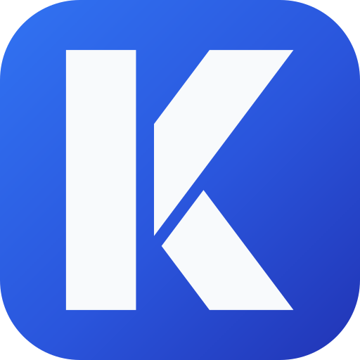

Cruza os dois favoritos: estrutura navy com o braço na paleta ciano da electric. Alto contraste, cara de produto tech.

Inverso da navy: o acento azul vai para a perna, sugerindo movimento e avanço. Barra e braço em navy.

A navy sem o quase-preto: barra e perna em índigo profundo, braço azul vivo. Mais colorida, ainda sóbria.

Paleta do original, mas cada plano recebe luz diferente — profundidade sutil sem virar 3D.

Duotone da electric: corpo azul, braço em ciano-gelo. O braço vira o ponto focal luminoso.

Uma cor só, sem gradiente. Versão de produção: impressão 1 cor, bordado, carimbo, favicon pequeno.

Tile navy com o K no gradiente electric. Alternativa colorida ao ícone branco.

Tile no gradiente azul original com K branco. Ícone claro e vibrante para lojas de app.